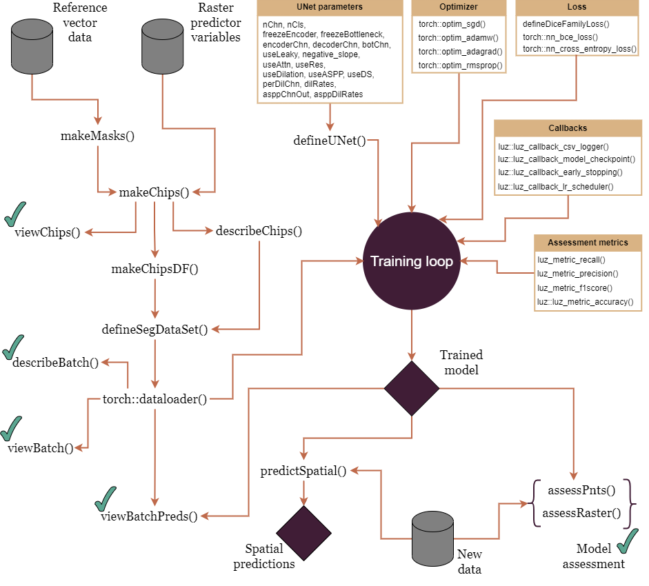
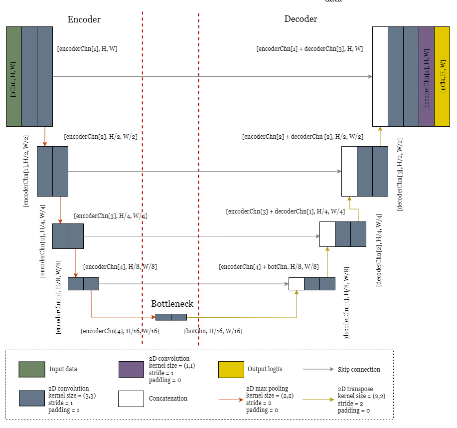
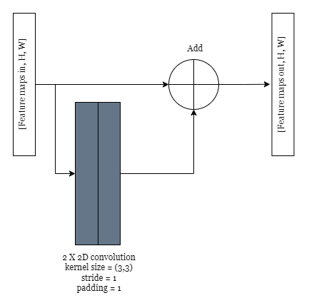
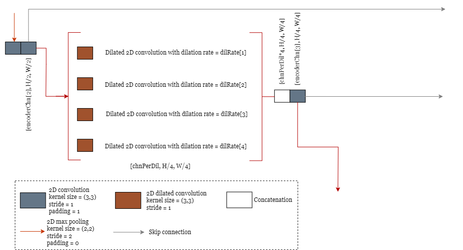
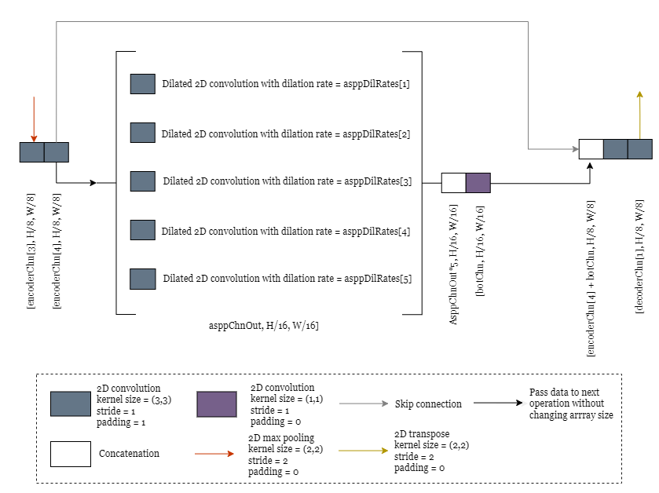
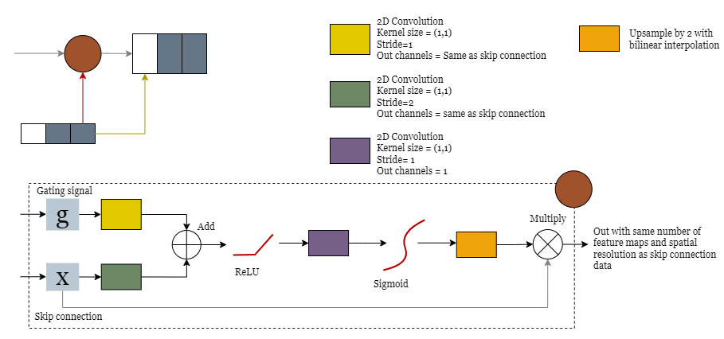
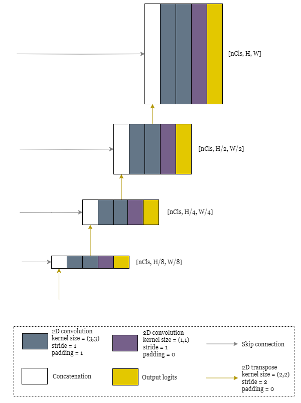

Getting Started with geodl
Geospatial deep learning with R, torch, and terra
Introduction
Welcome to geodl. The goal of this package is to support geospatial deep learning in the R data science language and computational environment. Specifically, it focuses on semantic segmentation, or pixel-level, classification tasks and makes use of torch, which is an R package that provides graphics processing unit (GPU)-accelerated tensor manipulation to support deep learning. One convenient characteristic of torch is that it does not make use of Python. It is not simply a wrapper around PyTorch. Instead, it interfaces with libtorch and C++ code, which simplifies the installation and computational environment. Raster geospatial data are handled with the terra package, and the model training can be implemented with luz. The torchvision package is also used to handle image-like data arrays or tensors and to perform data augmentations.
PyTorch, the Python library that interfaces with libtorch, has a large user base and ecosystem of additional packages that expand and/or simplify its use. Unfortunately, torch in R does not have this same level of development to date. As a result, geodl was developed to make it easier to use torch for geospatial semantic segmentation deep learning. Specifically, geodl provides functions and utilities to:
- Generate raster-based masks from reference vector geospatial data
- Generate image chips from input raster-based predictor variables and raster masks
- List image/mask chip names and paths into a data frame
- View image chip subsets
- Calculate statistics from image chips and masks
- Define a DataSet for use in a DataLoader and apply random augmentations as needed
- View data generated by a DataSet/DataLoader
- Define a UNet-like architecture for semantic segmentation
- Train a semantic segmentation model using custom loss and assessment metrics
- Use a trained model to predict to new spatial data extents without the need to generate chips
- Assess models using remote sensing metrics and standards
geodl is still experimental. Please let us know if you have any issues, suggestions, or would like to contribute. Our goal is to further refine this package and eventually release it to CRAN.
What are the system requirements?
You should use R version >=4.1. The following packages are also required: dplyr, terra, diffeR, caret, rfUtilities, and MultiscaleDTM. The most recent version of these packages should be used.
If you plan to train models, it is recommended to have a computer with a CUDA-enabled GPU. You will also need to set up CUDA and the cuDNN library on your computer. This vignette provides information on how to set up CUDA on your machine for GPU-based computation. Note that torch in R cannot yet make use of multiple GPUs.
How do I install geodl?
geodl is not yet available on CRAN. However, it can be installed from GitHub using the remotes package.
Overview of the workflow
Figure 1 provides an overview of the geodl workflow. Functions prefixed with torch:: are from the torch package, and those prefixed with luz:: are form the luz package. Functions with a green check mark indicate those that are used as checks during the process or to assess trained models. Purple diamonds indicate outputs or results: the trained model and predictions to new raster data. The remainder of this document describes the components/functions of the workflow and package.

Data prep
Functions provided by geodl support the production of image chips and associated masks to train semantic segmentation models. The generated chips can then be listed to a data frame object and referenced within a DataLoader. The key preparation functions are briefly described here. Our goal in this document is to provide an introduction to these functions. For a more detailed discussion of the functions and their associated parameters, please see the package documentation.
- makeMasks(): generate categorical raster masks from vector-based geospatial data. This function can also crop images to a define extent to align them with the generated masks. Images and associated masks must have the same spatial extent, origin, coordinate reference system, and cell size if our functions/workflow will be used to generate chips from them. The user must select a column from the vector data that provides a unique numeric code for each class. You should start class codes at 0 and not skip any values (i.e., class codes should be 0 to n-1). For binary classification problems, the background class should be coded to 0 and the presence or positive class should be coded to 1.
- makeChips()/makeChipsMultiClass(): break larger image extents and associated raster masks into smaller image chips of a defined size or number of rows and columns of pixels. The makeChips() function should be used for binary classification where the positive class is assigned a value of 1 and the background class is assigned a value of 0. When more than two classes are differentiated using unique numeric codes, the makeChipsMultiClass() function should be used. If you have sparse labels (i.e., not all pixels are labelled to a class even though they belong to a specific class), these pixels should be assigned a numeric code that can then be referenced in the loss and/or assessment metrics to be ignored. For a binary classification problem, all chips can be generated (“All”), just those containing at least one pixel mapped to the positive case (“Positive”), or both background-only and positive case chips written to separate folders (“Divided”). If a chip is incomplete or has NA/NoDATA values, generally resulting from a non-rectangular raster extent, that chip will not be written to disk; only complete chips are produced. Chips are written to a TIFF file format. The masks will be a single band raster where each cell is assigned to a class index. Predictor variables are written as multiband raster grids.
- makeChipsDF(): create a data frame listing all image chip names and the path to the image and mask chips. If the “Divided” method is used, a column is added to note whether the chip contains positive class cells or just background cells.
- describeChips(): obtain summary statistics from image chips and masks. These results can be used to specify normalization or rescaling parameters within defineSegDataSet() or defineSegDataSetDS() or to determine class weights to deal with class imbalance. This function is also useful as a check to make sure the range of predictor variable values and class codes are as expected.
- viewChips(): plot a random subset of image chips and associated masks. The primary purpose of this function is to offer a visual check of image chips.
- defineSegDataSet()/defineSegDataSetDS(): define a DataSet subclass that references the chips data frame. This function also provides options to apply random data augmentations to potentially combat overfitting. If a chip is flipped, the mask will also be flipped for alignment. The user can also specify normalization or rescaling parameters. It is generally recommended that the predictor variables be scaled such that the data range is 0 to 1. For example, a rescaling factor can be used to convert 8-bit image channels (0 to 255) to this scale. If you are implementing deep supervision, described below, you should use defineSegDataSetDS().
- viewBatch(): provides a visual check of a batch of data generated using defineSegDataSet()/defineSegDataSetDS() and a DataLoader.
- describeBatch(): provides a check of a data batch. This can be used to confirm that the data are scaled as expected, in the correct configuration (Batch, Channels, Height, Width), and have the correct data types. This can also be used to make sure the associated masks have the expected numeric codes, shape, and data type.
- makeTerrainDerivatives(): creates a three-band raster stack from an input digital terrain model (DTM) of bare earth surface elevations. The first band is a topographic position index (TPI) calculated using a moving window with a 50 m circular radius.The second band is the square root of slope calculated in degrees. The third band is a TPI calculated using an annulus moving window with an inner radius of 2 meters and outer radius of 5 meters. The TPI values are clamped to a range of -10 to 10 then linearly rescaled from 0 and 1. The square root of slope is clamped to a range of 0 to 10 then linearly rescaled from 0 to 1. Values are provided in floating point. This means of repenting digital terrain data is discussed in the following publication, which is available in open-access:
Maxwell, A.E., W.E. Odom, C.M. Shobe, D.H. Doctor, M.S. Bester, and T. Ore, 2023. Exploring the influence of input feature space on CNN-based geomorphic feature extraction from digital terrain data, Earth and Space Science, 10: e2023EA002845. https://doi.org/10.1029/2023EA002845].
UNet model
The defineUNet() function provides a flexible means to generate a UNet-like architecture for semantic segmentation tasks, which is conceptualized in Figure 1. Here are the primary characteristics of the implementation:
- accepts a variable number of input predictor variables or channels, defined by the nChn parameter, and output classes, defined by the nCls parameter.
- predicts a logit for each class in the case of a multiclass classification (logits are not passed through a softmax activation to obtain probabilities).
- for a binary classification, can predict a single logit for the positive case or 2 logits corresponding to the positive and negative case.
- contains 4 encoder blocks, a bottleneck block, and 4 decoder blocks
- allows the users to specify the number of output feature maps from each encoder block (encoderChn parameter), the bottleneck block (botChn parameter), and each decoder block (decoderChn parameter). The default number of output encoder feature maps per encoder block are 16, 32, 64, and 128; the default number of output feature maps for the bottleneck is 256; the default number of output feature maps for the decoder blocks are 128, 64, 32, and 16.
- by default, uses the rectified linear unit (ReLU) activation function throughout the architecture to incorporate non-linearity and uses batch normalization to combat gradient issues and aid in convergence.
- Uses 2D transpose convolution to upscale the feature maps in the decoder blocks.

We have also implemented some options for further customizing the architecture.
- replace rectified linear unit (ReLU) activation with leaky ReLU and define the negative slope term.
- replace the double convolution layers in the encoder, bottleneck, and decoder with residual double convolution layers.
- replace the double convolution layers in the encoder and decoder with dilated convolution with multiple dilation rates with or without residual connections.
- replace the bottleneck layer with an atrous spatial pyramid pooling-like (ASPP) module.
- add attention gating mechanisms.
- use deep supervision.
- freeze the encoder and/or bottleneck so that only the decoder is trained.
Leaky ReLU
The traditional ReLU activation function adds non-linearity to the model by converting all negative activations to 0 and maintaining the positive activations. Leaky ReLU augments this by allowing for maintaining the negative activations but with a reduced magnitude by applying a negative slope term. Leaky ReLU may help alleviate the vanishing gradient problem. If you want to use leaky ReLU in place of ReLU, set the useLeaky parameter to TRUE. You can also specify the negative_slope parameter, which is 0.01 by default if leaky ReLU is used.
Residual blocks
The traditional double-convolution layers used in UNet consist of passing the input feature maps through a 2D convolution with a kernel size of (3,3), a stride of 1, and a padding of 1 to produce a set of feature maps equal to the number of input feature maps. These results are then passed through a second 2D convolution layer with a kernel size of (3,3), a stride of 1, and a padding of 1 to generated the user-defined number of output feature maps for that stage in the architecture. A residual connection or residual block augments this architecture by adding the input feature maps to the output from the second 2D convolution (Figure 2). Note that this is an actual addition of the feature maps, not a concatenation. The goal is to potentially reduce the vanishing gradient issue by maintaining this original signal in the the output. To use residual connections, set the useRes parameter to TRUE.

Dilation
Dilated or atrous convolution consists of adding zeros into the moving window or kernel so that convolution can be performed using cells that are not direct neighbors. The goal is to increase the receptive field to capture spatial patterns at varying scales. If the useDilation parameter is set to TRUE, the traditional double convolution layers in the encoder will be replaced by an augmented block that incorporates dilation at 4 different rates. Padding is used to maintain the size of the feature maps in the spatial dimensions so that results from each dilation rate can be concatenated. Once the feature maps from all 4 dilated convolution blocks are concatenated, they are passed through a second 2D convolution without dilation. This architecture is conceptualized in Figure 3.
If you want to use dilation, set the useDilation parameter to TRUE. The dilRates parameter specifies the dilation rate to use in each of the 4 dilated convolution components, which are 1, 3, 5, and 7 by default. The perDilChn parameter specifies how many feature maps to produce within each dilated convolution block. Since there are 4 dilated convolutions layers that are then concatenated before being passed through the final 2D convolution layer within the block, the total number of feature maps produced will be 4 times perDilChn. The final number of feature maps from each block following the second 2D convolution is controlled by the encoderChn parameter.

Atrous Spatial Pyramid Pooling (ASPP)
Atrous spatial pyramid pooling (ASPP) is similar to the concept of dilated convolution. The goal is to capture spatial context at varying scales to increase the size of the receptive field. This technique is applied within the DeepLabv3+ architecture. We implement a modified version of this module here (Figure 4). If the useASPP argument is set to TRUE, the bottleneck layer is replaced with the modified ASPP module. This module accepts the feature maps from the 4th encoder block without applying max pooling. Dilated convolution is then performed using dilation rates of 1, 2, 4, 8, and 16 by default. These rates can be changed using the asppDilRates parameter. The asppChnOut parameter defines the number of features maps generated by each of the dilated convolution layers and is 64 by default. As a result, the number of feature maps produced will be 5 times asppChnOut. The results are then concatenated and passed through a 2D convolution layer with a kernel size of (1,1), a stride of 1, and a padding of 0. The number of output feature maps from this final layer is controlled by the botChn parameter, same as the default bottleneck layer that does not use the ASPP module.

Attention gates
Attention gates provide a mechanism to allow for forcing the model to focus on key features or regions within the image. The idea is to use the results from the subsequent layer in the network, where a deeper set of features have been extracted, to add focus or attention to the feature maps from the prior layer that are then concatenated with the upscaled feature maps from the following block and fed to the decoder block. This process is implemented as follows and is conceptualized in Figure 5:
- The feature maps from the next layer in the sequence (for example, the feature maps produced by encoder block 3 when the attention gate will be applied to the feature maps from encoder block 2) are passed through a 2D convolution layer with a kernel size of (1,1), a stride of 1, and a padding of 0. The number of channels are changed to match those from the prior block. A batch normalization is then applied.
- The feature maps from the current layer are passed through a 2D convolution layer with a kernel size of (1,1), a stride of 2, and a padding of 0. The number of output feature maps are equal to the number of input feature maps. Since a stride of 2 is used, this will decrease the spatial resolution by half such that the size is the same as those from the next block. Batch normalization is then applied.
- The gating signal from Step 1 and the feature maps from Step 2 are then added together and passed through a ReLU activation.
- The results from Step 3 are passed through a 2D convolution with a kernel size of (1,1), a stride of 1, and a padding 0 to produce a single output feature map. This feature map is then passed through a batch normalization layer followed by a sigmoid activation. This results is values between 0 and 1 where values near 1 highlight areas that should be focused on or areas to which attention should be applied.
- In order to return the original spatial resolution of the input feature maps, upsampling is then applied using bilinear interpolation.
- The original feature maps from the encoder block of interest are multiplied by the result from Step 5.
- The results from Step 6 are concatenated with the upsampled feature maps from the next block, which are first upscaled using 2D transpose convolution, to be fed into the associated decoder block as normal.
If you would like to implement attention gates, set the useAttn argument to TRUE.

Deep supervision
Deep supervision consists of generating predictions using the output from each decoder block at the spatial resolution of that block as opposed to only making a prediction at the end of the final decoder block (Figure 5). Losses are then calculated for each of these results. The goal is to further guide the generation of feature maps in the intermediate layers. If you want to use deep supervision, set the useDS parameter to TRUE. We will discuss deep supervision in more detail below in the context of the training process.

Freezing the encoder and/or backbone
If a model has already been trained, it is possible to use the learned parameters to initiate a new model. This is one way to implement transfer learning. You should only freeze the encoder and/or bottleneck if you are initiating a model using learned parameters as opposed to random parameters. Also, if you freeze the backbone, you should also freeze the encoder. Freezing can be implemented by setting the freezeEncoder and/or freezeBackone parameter(s) to TRUE. When set to TRUE, this will not allow the parameters in the encoder and/or backbone to be updated during the training process.
Train a model
Once data have been prepared and a model has been configured, it can be trained. We highly recommend using the luz package to train models as opposed to defining your own training loop since the training loop is prone to errors. There are a few key considerations when setting up your training process. Our provided examples demonstrate the training process. Here, we will point out key considerations and make some general recommendations.
- Data should be partitioned into separate and non-overlapping training, validation, and testing sets. The training data are used in the learning process to update the model parameters based on prediction error and the calculated loss. The validation data are generally predicted at the end of each training epoch to assess how well the model is performing when predicting to new data. The use of validation data are important to assess for overfitting and model generalization. The testing data are used to assess the final model and are generally not used during the training loop.
- You need to set a batch size in the DataLoader. This will partially be dictated by your hardware, especially the amount of VRAM available in your graphics card. If you run out of memory during the training process, you may need to decrease the batch size. Again, you will need access to a GPU to train semantic segmentation models.
- You will need to specify a number of epochs over which to train the model. An epoch is one complete iteration over the training data.
- You will need to select an optimizer. Optimizers also have hyperparameters, such as the learning rate. We suggest using the lr_finder() function from luz to determine an appropriate learning rate. This is demonstrated in our examples.
- You will need to select a loss metric. This will partially be dictated by the type of problem (i.e., binary vs. multiclass) and issues of data imbalance between classes.
- You can choose to monitor different assessment metrics. Appropriate assessment metrics will vary by problem type.
- You may choose to augment or further control the learning process using callbacks. Several useful callbacks have been implemented with luz and will be discussed below.
Optimizers
torch provides several optimizers including:
- Adadelta: optim_adadelta()
- Adagrad: optim_adagrad()
- Adam: optim_adam()
- AdamW: optim_adamw()
- LBFGS: optim_lbfgs()
- RMSprop: optim_rmsprop()
- Rprop: optim_rprop()
- Stochastic Gradient Descent (SGD): optim_sgd()
There is no preferred optimizer for all use cases. We generally prefer to use optim_adamw(); however, others may disagree. For more information about optimizers, please see the torch documentation.
Loss metrics
The choice of loss metric is very important, as this measure serves as the sole guide to updating the model parameters during the learning process using backpropogation of errors and the optimizer. torch provides several loss functions natively using both function- and class-based implementations. Class-based implementations subclass nn_module() from torch.
- Binary cross-entropy (nnf_binary_cross_entropy_with_logits()/nn_bce_with_logits_loss()): This loss is for binary classification where only the logit for the positive case is returned. There is also a version that accepts probabilities as opposed to logits (nn_bce_loss()); however, since our UNet-like architecture returns logits as opposed to probabilities, you should use the “with_logits” version. To use nn_bce_loss(), you would need to first pass the logits through a sigmoid activation.
- nnf_cross_entropy()/nn_cross_entropy_loss(): This is for multiclass classification problems or binary classification problems where both the positive and background logits are returned. This loss expects logits as opposed to probabilities (i.e., the logits have not been passed through a softmax activation). As a result, it is compatible with our UNet-like architecture. When using cross-entropy loss, you can also specify class weights, which can be useful for combating class imbalance. In the case of sparse labels, you can assign the “missing” class to a weight of zero so that these pixels do not impact of the parameter updates or learning process.
Additional loss metrics have been proposed that can be especially useful when class proportions in the training set are imbalanced and/or when you want to have more control over the relative weightings of false positive and false negative errors. Unfortunately, these additional losses have not been implemented in torch. As a result, we have provided utilities for using and calculating some additional losses as part of geodl. These metrics are provided by the defineDiceFamilyLoss() function, which subclasses nn_module(). A function-based version is also provided as dice_loss_family(), which is called internally by the class-based version.
For binary classification problems, the Dice, Focal Dice, Tversky, or Focal Tversky loss is often used. Dice loss is simply 1 - Dice or 1 - F1-score. Dice and F1-score are equivalent. Tversky allows for specifying the relative weights of false positive and false negative errors using alpha and beta terms, respectively. The focal version of these losses adds a gamma term, which can be used to control the relative weighting of difficult to classify examples. Values larger than 1 will put more weight on difficult to classify samples. It is also possible to combine one of these losses with binary cross-entropy, generally termed combo loss. In order to have control over the relative contribution of the two losses, a weighting term is generally applied.
These metrics can be extended for multiclass classification problems, or a binary classification problem where both the positive and negative logit are returned. When doing so, it is important to consider how the class-level metrics are aggregated. Micro-averaging consists of pooling all true positive, true negative, false positive, and false negative predictions to calculate the metric. Classes with more samples will have a higher weight in the calculation. In contrast, macro-averaging consists of calculating the metric for each class separately then averaging the results. Using this method, classes will take on equal weight in the calculation. Alternatively, you can also incorporate class weights to obtain a class-weighted, macro-averaged metric. These multiclass losses can also be combined with cross-entropy loss as a combo loss. A weighting factor can be specified to control the relative contribution of each loss. Class weights can also be used for cross-entropy and the macro-averaged losses.
It should also be noted that Dice- and Tversky-based losses make use of the predicted class probabilities, obtained by applying a sigmoid or softmax activation, as opposed to the “hard” classification, as is the case when Dice, or the equivalent F1-score, is used as an assessment metric as opposed to a loss metric.
Below we have provided the input parameters for our defineDiceFamilyLoss() function.
- smooth: smooth factor to aid in stability and to prevent divide-by-zero errors. Default is 1.
- mode: either “multiclass” or “binary”. Default is “multiclass”. If “multiclass”, the prediction should be provided as (Batch, Channel, Height, Width), where the channel dimension provides the predicted logit for each class, and the target should be (Batch, Channel, Height, Width), where the channel dimension provides the index for the correct class. Script assumes class indices start at 0 as opposed to 1. If “binary”, the prediction should be provided as (Batch, Channel, Height, Width), where the channel dimension provides the predicted logit for the positive class, and the target should be (Batch, Channel, Height, Width), where the channel dimension provides the index for the correct class (0 = negative, 1 = Positive). If the target does not included the channel dimension (i.e. (Batch, Height, Width)), the chnDim argument should be set to FALSE, which will force the script to add the channel dimension. It is best to provide targets in a torch_long data type. If not, the script will convert the targets to long. Predictions should be provided as logits, and a softmax or sigmoid activation should not be applied. The data type for the predictions should be torch_float32.
- alpha: alpha parameter for false positives in Tversky calculation. This is ignored if Dice is calculated. The default is 0.5.
- beta: beta parameter for false negatives in Tversky calculation. This is ignored if Dice is calculated. The default is 0.5
- gamma: gamma parameter if Focal Tversky or Focal Dice is calculated. Ignored if focal loss is not used. Default is 1.
- average: either “micro” or “macro”. Class averaging method applied for multiclass classification. If “micro”, classes are weighted relative to their abundance in the target data. If “macro”, classes are equally weighted in the calculation. Default is “micro”.
- tversky: TRUE or FALSE. Whether to calculate Tversky as opposed to Dice loss. If TRUE, Tversky is calculated. If FALSE, Dice is calculated. Default is FALSE.
- focal: TRUE or FALSE. Whether to calculate a Focal Dice or Focal Tversky loss. If FALSE, the gamma parameter is ignored. Default is FALSE.
- combo: TRUE or FALSE. Whether to calculate a combo loss using Dice/Tversky + binary entropy/cross entropy. If TRUE, a combo loss is calculated. If FALSE, a combo loss is not calculated. Default is FALSE.
- useWghts: TRUE or FALSE. Default is FALSE. If TRUE, class weights will be applied in the calculation of cross entropy loss and macro-average Dice or Tversky loss. This setting does not impact micro-averaged Dice or Tversky loss. If TRUE, the wght argument must be specified.
- wght: TRUE or FALSE. Default is FALSE. Must be defined if useWhgts is TRUE. A vector of class weights must be provided that has the same length as the number of classes. The vector is converted to a torch tensor within the script.
- ceWght: if combo is TRUE, defines relative weighting of binary cross entropy/cross entropy in the loss as (Dice/Tversky) + ceWght*(binary cross entropy/cross entropy). Ignored if combo is FALSE. Default is 1, or equal weighting in the calculation between the two losses.
- chnDim: TRUE or FALSE. Default is TRUE. If TRUE, assumes the target tensor includes the channel dimension: (Batch, Channel, Height, Width). If FALSE, assumes the target tensor does not include the channel dimension: (Channel, Height, Width). The script is written such that it expects the channel dimension. So, if FALSE, the script will add the channel dimension as needed.
- mskLong: TRUE or FALSE. Default is TRUE. Data type of target or mask. If the provided target has a data type other than torch_long, this parameter should be set to FALSE. This will cause the script to convert the target to the tensor_long data type as required for the calculations.
If deep supervision is implemented, you must use the defineDiceFamilyLossDS() version of the function. This version expects 4 resulting predictions at different spatial scales as opposed to 1. The dsWghts parameter controls the relative weights of each loss in the final, combined loss. The argument for this parameter should be a vector of 4 weights that specify the relative contribution of each loss in the combined deep supervision loss. The 1st weight is applied to the result at the original spatial resolution, the 2nd at the 2nd spatial resolution (H/2, W/2), the 3rd at the 3rd spatial resolution (H/4, W/4), and the 4th at the 4th spatial resolution (H/8, W/8). The default is (1, .33, .33, .33). The final loss is the weighted average of the 4 losses.
Assessment metrics
Several assessment metrics are provided by the luz package. luz_metric_accuracy() can be used to obtain overall accuracy for a multiclass classification. For a binary classification where only the positive case logit is returned, you should use luz_metric_binary_accuracy_with_logits() as opposed to luz_binary_accuracy() since our UNet-like architecture returns logits as opposed to class probabilities. luz also provides the luz_metric() function for defining new or custom metrics. The geodl package made use of this function to create implementations of recall, precision, and F1-score.
luz_metric_recall(), luz_metric_precision(), and luz_metric_f1_score() can be used for both binary and multiclass assessment. If only the positive case logit is returned for a binary classification, you should set the mode parameter to “binary”. When two or more classes are returned, you should set the mode argument to “multiclass”. For multiclass assessment, the average method controls how class-level metrics are combined. “macro” implements macro-averaging, in which the metric is calculated separately for each class and then averaged. Each class has equal weight in the resulting metric. In contrast, “micro” implements micro-averaging where results are collapsed to true positive, true negative, false positive, and false negative predictions to calculate a single metric. Using this mode, classes with more samples will take on a higher weight in the resulting calculation. It is important to note that recall, precision, F1-score, and overall accuracy are equivalent when micro-averaging is used. So, there is not need to calculate all of these metrics using micro-averaging. We recommend just calculating overall accuracy.
Deep supervision
As noted above, deep supervision consists of generating predictions using the output from each decoder block at the spatial resolution of that block as opposed to only making a prediction at the end of the final decoder block. Losses are then calculated for each of these results. The goal is to further guide the generation of feature maps in the intermediate layers.
In order implement deep supervision, you will need to do the following:
- Use the defineSegDatasetDS() function as opposed to the define defineSegDataset() function to build your DataSet. The key difference is that the DS version returns the input predictor variables at the original spatial resolution and the masks at 4 spatial resolutions as opposed to just returning the original masks. The reduced spatial resolution masks are generated using the aggregate() function from terra using the “modal” method where the majority or most commonly occurring class from the cells being aggregated into a larger pixel is returned.
- Set the useDS argument to TRUE for this parameter in the defineUNet() function.
- Use deep supervision versions of the losses. As noted above, defineDiceFamilyLossDS() allows for using Dice, Focal Dice, Tversky, Focal Tversky, or a combo loss configured for deep supervision. The dsWghts parameter controls the relative weights of each loss in the final, combined loss. The argument for this parameter should be a vector of 4 weights that specify the relative contribution of each loss in the combined deep supervision loss. The 1st weight is applied to the result at the original spatial resolution, the 2nd at the 2nd spatial resolution, the 3rd at the 3rd spatial resolution, and the 4th at the 4th spatial resolution. The default is (1, .33, .33, .33). The final loss is the weighted average of the 4 losses. We have also provided augmented version of binary cross-entropy and cross-entropy losses (binary_loss_DS()/defineBceCeLoss()) for use with deep supervision that are based on the original torch implementations.
Additionally, you will need to set the usedDS argument to TRUE in several other functions including viewBatch(), describeBatch(), viewBatchPreds(), and predictSpatial(). This argument must also be set to TRUE for assessment metrics: luz_metric_recall(), luz_metric_precision(), and luz_metric_f1_score(). We have also provided augmented versions of luz metrics for deep supervision: luz_metric_accuracyDS(), luz_metric_binary_accuracyDS(), and luz_metric_binary_accuracy_with_logitsDS().
Selecting a learning rate
Generally, the learning rate is an important hyperparameter. A large learning rate may cause the optimization process to pass over the optimal parameters. In contrast, a low learning rate my cause the learning process to get “stuck” in a local minimum and/or increase the time required for the learning process to converge. One means to select a learning rate is described in this paper by Leslie Smith. This learning rate finder process works by running a fast training iteration where the learning rate starts at a very low value and is incrementally increased to a very large value with the learning rate changing after each data batch. The optimal minimum learning rate is the one at which the loss decreased the fastest while the optimal maximum learning rate is ten times greater than the minimum. It has also been suggested that optimizers that use adaptive learning rates, such as Adam, can benefit from learning rate optimization.
The luz package provides an implementation of a learning rate finder via the luz_finder() function. Our examples will demonstrate the use of a this learning rate finder. Generally, we suggest using this function to select an appropriate learning rate or range of learning rates.
luz also provides the luz_callback_lr_scheduler() function for defining and implementing callbacks to change or adapt the learning rate during the training process. This function can use a variety of learning rate schedules provided by torch including the following (provided descriptions are from the torch documentation):
- lr_lambda(): sets the learning rate of each parameter group to the initial learning times a given function.
- lr_multiplicative(): multiplies the learning rate of each parameter group by a factor given in the specified function.
- lr_one_cycle(): implement on cycle learning after Smith and Topin (2018).
- lr_reduce on plateau(): reduce learning rate when model stops improving.
We have personally found one-cycle learning to be useful and recommend that it be experimented with.
Incorporating luz callbacks
The luz package provides additional callbacks that can be very useful during the learning process. Several of these will be demonstrated in our provided examples. For example, luz_callback_early_stopping() can be used to stop the learning process early if the model is no longer improving based on the loss or an assessment metric of interest, either calculated from the training or validation data. luz_callback_csv_logger() allow for logging calculated losses and metrics for the training and validation data to disk as a CSV file. luz_callback_model_checkpoint() can be used to save models to disk after each epoch or only if the model has improved based on the loss or an assessment metric. You can even define custom callbacks using the luz_callback() function.
Model assessment and inference
Assessment
Once a model has been trained, the results should be assessed using a testing dataset that is separate and non-overlapping with the training and validation sets. geodl provides several functions for assessing models. First, the viewBatchPreds() function allows for visualizing a batch of predictions, reference masks, and predictor variables that were created using defineSegDataSet() or defineSegDataSetDS() and a DataLoader and subsequently predicted with a trained model. The luz package provides additional routines, which will be demonstrated in our examples, for obtaining accuracy assessment metrics and losses for an entire testing set fed to the model as batches. Effectively, this process implements the same loss and accuracy assessment calculations used in the training loop for the training and validation data.
geodl provides the assessPnts() function that allows for performing assessments at point locations. This requires that reference and predicted classes be extracted at point locations and stored in a data frame. The assessRaster() function allows for assessment using all cells in an extent as opposed to point locations. This method can be used when you have reference labels and predictions for all pixels in an extent.
These functions will generate a set of summary metrics when provided reference and predicted classes. For a multiclass classification problem, a confusion matrix is produced with the columns representing the reference data and the rows representing the predictions. The following metrics are calculated: overall accuracy (OA), 95% confidence interval for OA (OAU and OAL), the Kappa statistic, map image classification efficacy (MICE), average class user’s accuracy (aUA), average class producer’s accuracy (aPA), average class F1-score, overall error (Error), allocation disagreement (Allocation), quantity disagreement (Quantity), exchange disagreement (Exchange), and shift disagreement (shift). For average class user’s accuracy, producer’s accuracy, and F1-score, macro-averaging is used where all classes are equally weighted. As mentioned above, it is not necessary to return micro-averaged producer’s accuracy, user’s accuracy, and F1-score since these are equivalent to overall accuracy. For a multiclass classification, all class user’s and producer’s accuracies are also returned. For a binary classification problem, a confusion matrix is returned along with the following metrics: overall accuracy (OA), overall accuracy 95% confidence interval (OAU and OAL), the Kappa statistic (Kappa), map image classification efficacy (MICE), precision (Precision), recall (Recall), F1-score (F1), negative predictive value (NPV), specificity (Specificity), overall error (Error), allocation disagreement (Allocation), quantity disagreement (Quantity), exchange disagreement (Exchange), and shift disagreement (shift). Results are returned as a list object. This function makes use of the caret, diffeR, and rfUtilities packages.
For assessing map output, we generally recommend using a testing set that honors the true landscape proportions of each class. When a confusion matrix is generated using proportions that approximate the true landscape proportions, it is termed a population matrix or population confusion matrix.
Inference
A trained model can be used to infer to new raster data as long as the input variables are the same as those used to train the model. The predictSpatial() function allows for predicting to a raster extent. In order to process large raster extents, chips are extracted from the larger extent relative to the chpSize parameter. Overlap between chips are specified using the stride_x and stride_y parameters. We generally recommend using an overlap of at least 25% between adjacent chips. It has generally be found that predictions nearer to the margin of a chip are poorer or less accurate, likely due to the lack of a full set of neighboring pixels. As a result, the crop parameter can be set to remove outer rows and columns of pixels and not include them in the final, merged product. Using a combination of overlap with the stride_x and stride_y parameters in combination with cropping (crop) allow for only predictions in the center of each processed chip to be included in the final, merged product.
For a binary classification and when the probs argument is set to FALSE, a single-band raster in which each cell is labeled as 1 (predicted to the positive case) or 0 (background or predicted to the negative case) is returned. If the probs argument is set to TRUE, the positive case probability will be returned by passing the predicted logit at each cell through a sigmoid activation. For a multiclass classification and when the probs argument is set to FALSE, a single-band raster will be returned in which each cell holds the index or numeric code for the predicted class. If the probs argument is set to TRUE, a multiband raster will be produced in which each band holds the predicted probability for each class at each pixel location generated by passing the logits through a softmax activation. All class probabilities at a cell will sum to 1, minus any rounding error.